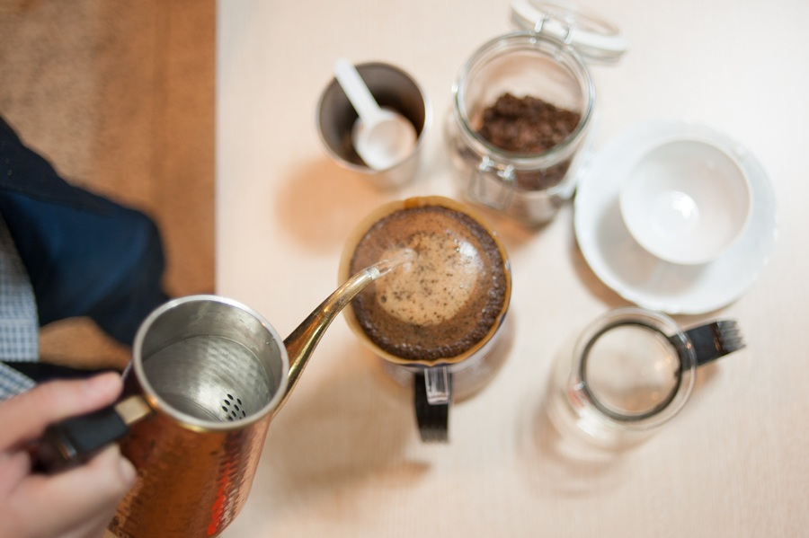

Notes on brewing
Five rules for a slower cup
Pour-over rewards patience more than gear. A few habits that make the morning cup better.

1. Weigh, don't scoop
Fifteen grams of coffee to 250 grams of water is a good start. Change one thing at a time.
2. Grind just before
Ground coffee goes flat within minutes. Grind for the cup you're about to make.
3. Let it bloom
Wet the grounds with a little water and wait thirty seconds before the main pour.